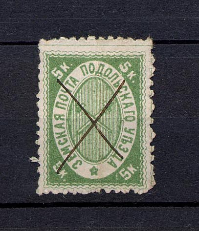
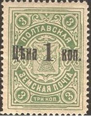
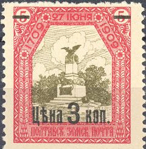

{kind=link}



Return To Catalogue - Go to Zemstvos overview - Russia
Note: on my website many of the
pictures can not be seen! They are of course present in the
catalogue;
contact me if you want to purchase it.
5 k green (several types) 5 k green and brown (1894) 5 k green and black (1895)


1 k orange 3 k blue 6 k lilac 10 k red Surcharged

'3' on 1 k orange '3' on 6 k lilac '3' on 10 k red
According to http://ufdc.ufl.edu/UF00020235/00035/22j, the value '3' on 10 k red exists forged with black overprint (genuine overprints are violet). The same surcharge was also used on the next issue.


1 k orange 1 k red (1909) 1 k green (1912) 3 k blue 3 k brown (1908) 3 k green (1909) 3 k red (1912) 6 k lilac 6 k blue (1912) 10 k red 10 k lilac (1912) 15 k green 30 k orange (1912) Surcharged
1 on 6 k lilac (diagonally overprint) '3' on 1 k orange '3' on 6 k lilac '3' on 10 k red '3' on 15 k green Surcharged horizontally


1 kop on 3 k blue 1 kop on 3 k brown 1 kop (black or red) on 3 k green 1 kop (black or red) on 6 k lilac 1 kop on 10 k red 1 kop on 15 k green
(Some unlisted surcharges)

(Reduced sizes)
(reduced size)
1 k orange and blue 2 k blue and brown 3 k blue and black 5 k red and green 6 k green and brown 10 k brown and green 15 k lilac and grey

(Reduced size)
This set exists with various surcharges.
(Sorry, no picture available yet)
1 k green and black 3 k red and black 3 k lilac and red

(Reduced size)
1 k 3 k 10 k 20 k 30 k 40 k 50 k

3 k orange 3 k blue 3 k green 3 k brown 3 k lilac
Exist overprinted in black with values. Although these were originally official stamps, the overprint says it is for private use. The ‘price’ has been reduced to 1 k and the 0 overprint bottom left is to obliterate the number that the official user would have had to write in.
(Reduced size)
1 k green 3 k red